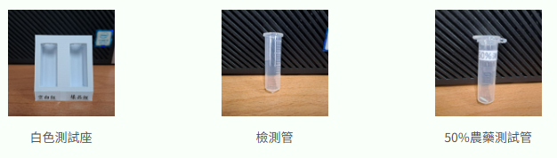
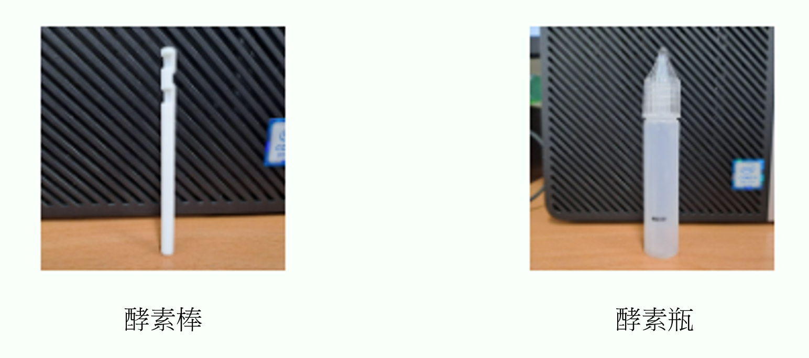

實驗步驟
-
樣品處理

- 將 5 個樣品瓶中分別加入約1 c.c.的75%酒精
- 用吸管中空部分在 5 種蔬果上各押出約5片圓片,分別作為5組蔬果樣品
- 將圓片的蔬果樣品分別放入對應的樣品瓶中
- 將含有蔬果的樣品瓶搖晃數秒後靜置 3 分鐘，分別作為5組蔬果液
-
光源調整

- 取出六根檢測管放入新檢測盒中：後排3孔放「空白管、樣品管1、樣品管2」，前排3孔放「樣品管3、樣品管4、樣品管5」
- 5根樣品管分別加入3-4滴對應的蔬果液(50% 農藥測試管改滴75%酒精)；空白管不加入任何樣品
- 將手機架好並移動紅框使其對準檢測盒中的六根檢測管
- 「空白組」紅框對準空白管；「樣品組1~5」紅框分別對準對應的樣品管
- 按下光源訊號確認查看空白組與各樣品組的第三個數值(B)，確認其值皆大於150且與空白組相差不大於15
-
農藥測試

- 在酵素瓶中加水至畫線處(約3 c.c.)
- 取出一根酵素棒，有凹槽的朝下，放進酵素瓶裡搖晃混合成酵素液
- 將六個檢測管中分別加入酵素液(加入時不要再移動檢測盒和手機)
- 按下開始分析並等待結果